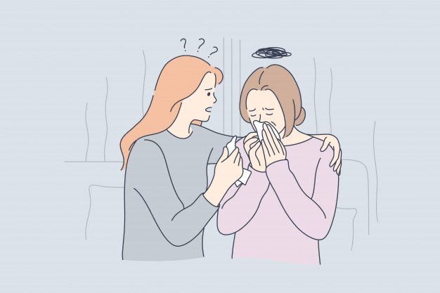

Как помочь подруге в трудный период
Когда близкий человек переживает трудности, мы часто не знаем, что сказать. Главное — просто быть рядом и слушать. Иногда человеку нужно не совет, а присутствие.
Не обесценивай её чувства, не сравнивай с другими (“у всех так бывает”) и не торопи “забыть”. Скажи: “Я рядом, если хочешь — можем просто помолчать”. Это уже большая поддержка.
Если ты замечаешь, что подруге тяжело долгое время — мягко предложи обратиться к специалисту.